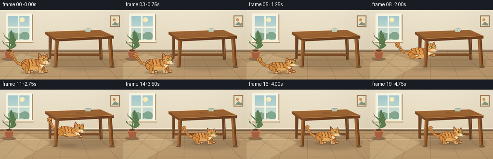
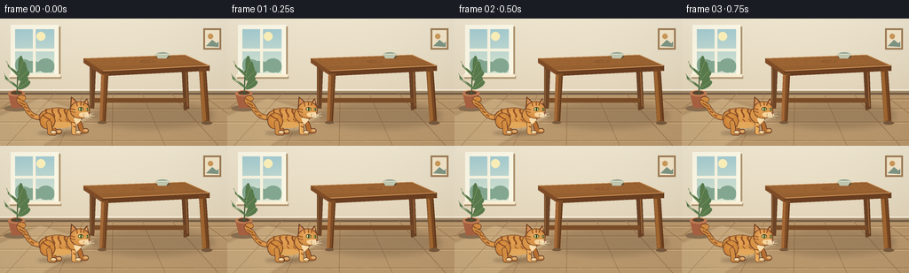

CODING AGENTS AS PIXEL WORLD MODELS
traex/GPT-6.1-Sol · dynamic_spatial_relationship_0008
点击播放 · 原生 RGB 像素
逐轮保存的候选
回放视频、检查图与代码变化。
每份候选均可单独播放。实际图片检查记录在下方工具轨迹中。
候选 01播放与检查图
点击播放 · 原生 RGB 像素


展开代码变化
--- 上一保存版本
+++ 本次保存版本
@@ -0,0 +1,231 @@
+from pathlib import Path
+import math, json
+import numpy as np
+from PIL import Image, ImageDraw, ImageFilter
+import artifact_io
+
+ROOT=Path(__file__).resolve().parent
+SPEC=json.loads((ROOT/'task_spec.json').read_text())
+W,H=SPEC['width'],SPEC['height']
+S=4
+
+def blend(a,b,t): return tuple(int(a[i]*(1-t)+b[i]*t) for i in range(3))
+def canvas():
+ yy=np.linspace(0,1,H*S)[:,None,None]
+ top=np.array([240,231,209])[None,None,:]; bot=np.array([219,202,172])[None,None,:]
+ arr=np.broadcast_to(top*(1-yy)+bot*yy,(H*S,W*S,3)).astype('uint8').copy()
+ return Image.fromarray(arr)
+
+def dtools(im):
+ d=ImageDraw.Draw(im)
+ def poly(p,c): d.polygon([(int(x*S),int(y*S)) for x,y in p],fill=c)
+ def line(p,c,w=1): d.line([(round(x*S),round(y*S)) for x,y in p],fill=c,width=max(1,round(w*S)),joint='curve')
+ def ell(box,c,outline=None,width=1): d.ellipse(tuple(round(v*S) for v in box),fill=c,outline=outline,width=max(1,round(width*S)))
+ def rect(box,c): d.rectangle(tuple(round(v*S) for v in box),fill=c)
+ return d,poly,line,ell,rect
+
+def bez(p,n=45):
+ a,b,c,d=p
+ return [((1-t)**3*a[0]+3*(1-t)**2*t*b[0]+3*(1-t)*t*t*c[0]+t**3*d[0], (1-t)**3*a[1]+3*(1-t)**2*t*b[1]+3*(1-t)*t*t*c[1]+t**3*d[1]) for t in np.linspace(0,1,n)]
+
+# Painted interior. All geometry and light are constructed locally.
+def room():
+ im=canvas(); d,p,l,e,r=dtools(im)
+ r((0,84,256,144),(187,153,110))
+ # wall molding
+ r((0,80,256,85),(167,143,111)); r((0,80,256,81.4),(246,234,213)); r((0,84,256,86),(117,94,70))
+ # oak planks in perspective
+ for y in [91,102,117,138]:
+ l([(0,y),(256,y)],(155,119,79),.7); l([(0,y+1),(256,y+1)],(209,176,130),.7)
+ for x in [-60,7,66,126,186,246,306]:
+ l([(128+(x-128)*.55,85),(x,144)],(159,123,84),.7)
+ rng=np.random.default_rng(12)
+ for k in range(90):
+ x=rng.uniform(0,256); y=rng.uniform(87,144); le=rng.uniform(5,25)
+ l([(x,y),(x+le,y+.08)],(184+int(rng.integers(-8,8)),146,100),.25)
+ # a framed window with blue sky and distant leafy trees
+ r((14,9,68,68),(174,148,111)); r((12,7,66,66),(252,248,230))
+ r((17,12,61,61),(160,198,197))
+ for y in range(12,62):
+ r((17,y,61,y+1),blend((165,204,209),(221,231,210),(y-12)/50))
+ e((41,15,51,25),(252,240,186))
+ for x,y,sz in [(16,56,12),(24,58,12),(35,62,14),(55,58,13),(63,60,11)]:
+ e((max(17,x-sz),y-sz,min(61,x+sz),min(61,y+sz)),(132,168,145))
+ r((37,12,40,61),(249,245,225)); r((17,34,61,37),(249,245,225))
+ r((11,65,69,68),(180,154,118)); r((10,63,68,66),(250,238,211))
+ # faint perspective sunlight on floor
+ light=Image.new('RGBA',im.size); dd,pp,ll,ee,rr=dtools(light)
+ pp([(0,109),(45,89),(109,109),(49,144),(0,144)],(255,240,189,48))
+ ll([(17,96),(73,130)],(172,151,115,20),2)
+ light=light.filter(ImageFilter.GaussianBlur(1.3*S)); im=Image.alpha_composite(im.convert('RGBA'),light).convert('RGB')
+ d,p,l,e,r=dtools(im)
+ # plant in the back-left corner
+ e((4,98,33,105),(139,111,80))
+ p([(9,84),(28,84),(25,101),(13,101)],(170,98,66)); e((9,81,28,88),(197,127,85)); e((12,82,25,86),(90,69,47))
+ l([(19,85),(20,59)],(68,98,65),1.2)
+ for cx,cy,tx,ty in [(20,65,9,54),(20,70,31,59),(19,78,6,68),(20,80,32,70),(21,62,26,48)]:
+ l([(cx,cy),(tx,ty)],(76,108,68),.8)
+ # tapered curved leaves
+ p(bez([(cx,cy),(tx-7,ty-8),(tx-1,ty-10),(tx,ty)])+bez([(tx,ty),(tx+7,ty+2),(cx+7,cy+2),(cx,cy)]),(89,123,77))
+ l([(cx,cy),(tx,ty)],(134,157,98),.5)
+ # simple art on the wall, no letters
+ r((229,11,249,35),(159,125,86)); r((231,13,247,33),(244,230,201))
+ e((234,17,240,23),(205,155,91)); p([(232,31),(239,24),(244,28),(246,26),(246,32)],(129,151,133))
+ return im
+
+def table(im,front=False):
+ d,p,l,e,r=dtools(im)
+ if not front:
+ # ambient table shadow
+ sh=Image.new('RGBA',im.size); sd,sp,sl,se,sr=dtools(sh)
+ se((102,95,241,124),(68,52,38,57)); sh=sh.filter(ImageFilter.GaussianBlur(3.5*S))
+ im.paste(Image.alpha_composite(im.convert('RGBA'),sh).convert('RGB'))
+ d,p,l,e,r=dtools(im)
+ # back legs and structure
+ p([(101,51),(108,52),(106,102),(101,101)],(108,68,39)); l([(102,57),(102,99)],(144,96,53),1)
+ p([(204,46),(211,47),(213,102),(207,104)],(106,66,38)); l([(209,54),(211,99)],(161,104,53),1)
+ p([(106,90),(209,90),(209,95),(106,95)],(122,77,40))
+ # tabletop and front apron
+ p([(94,45),(208,41),(236,53),(115,59)],(151,96,48))
+ p([(94,45),(115,59),(115,64),(94,50)],(126,76,39))
+ p([(115,59),(236,53),(236,59),(115,65)],(106,62,32))
+ l([(95,45),(208,41),(235,53)],(192,133,76),1)
+ l([(116,59),(235,53)],(222,161,98),1)
+ for j in range(7):
+ a=j/8
+ pts=[(99+15*a,46+10*a),(133+12*a,45+10*a),(171+11*a,45+9*a),(210+22*a,43+10*a)]
+ l(bez(pts),(161+8*(j%2),104+6*(j%2),55),.45)
+ # elliptical knot in the wood
+ e((157,47,174,50),(140,87,44)); e((160,47.5,172,49),(168,110,59)); l([(161,48),(169,48)],(121,73,37),.45)
+ # low ceramic bowl on far side
+ e((176,41,191,45),(93,80,58)); e((175,38,191,43),(218,215,184)); e((177,38.2,189,41),(135,157,143)); p([(175,40),(178,45),(187,45),(191,40)],(193,199,176)); l([(177,40),(189,40)],(241,239,211),.7)
+ else:
+ # two foreground legs frame the space under the table
+ p([(114,62),(122,62),(119,117),(112,117)],(126,77,38))
+ p([(114,63),(117,64),(115,115),(112,117)],(165,105,54))
+ l([(121,64),(118,116)],(83,50,28),.7)
+ p([(224,56),(232,56),(236,116),(228,118)],(120,71,34))
+ p([(225,60),(228,60),(232,115),(228,117)],(162,103,49))
+ l([(232,61),(235,114)],(87,49,26),.7)
+ e((110,116,120,119),(120,90,61)); e((227,116,239,120),(120,90,61))
+
+OUT=(103,59,36); FUR=(213,143,67); LIGHT=(239,175,93); STRIPE=(151,85,40); CREAM=(251,222,171)
+
+def cat(im,x,foot,scale,phase,frame):
+ # phase controls the crouch, airborne extension and landing.
+ air = 0.0; crouch=0.0; pitch=0.0
+ if 3<=frame<=5: crouch=(frame-3)/2*.24
+ if 6<=frame<=12:
+ q=(frame-6)/6
+ air=math.sin(math.pi*(.1+.8*q)); pitch=-.12*math.cos(math.pi*q)
+ if frame==13: crouch=.19
+ if frame==14: crouch=.08
+ stretch=1+.1*air
+ sy=1-crouch
+ # Draw on transparent layer; transforming small local shapes gives a consistent character.
+ layer=Image.new('RGBA',im.size,(0,0,0,0)); d=ImageDraw.Draw(layer)
+ def T(pt):
+ xx,yy=pt[0]*stretch,pt[1]*sy
+ return ((x+scale*(xx*math.cos(pitch)-yy*math.sin(pitch)))*S,(foot+scale*(xx*math.sin(pitch)+yy*math.cos(pitch)))*S)
+ def p(points,c): d.polygon([T(v) for v in points],fill=c)
+ def l(points,c,w=1):
+ coords=[T(v) for v in points]; wi=max(1,round(w*scale*S)); d.line(coords,fill=c,width=wi,joint='curve')
+ rad=wi/2
+ for a,b in (coords[0],coords[-1]): d.ellipse((a-rad,b-rad,a+rad,b+rad),fill=c)
+ def e(box,c,outline=None,ow=.65):
+ a,b,cx,dy=box; pts=[( (a+cx)/2+(cx-a)/2*math.cos(t),(b+dy)/2+(dy-b)/2*math.sin(t)) for t in np.linspace(0,2*math.pi,60)]
+ p(pts,c)
+ if outline: l(pts+[pts[0]],outline,ow)
+ def shaded(box,base,high):
+ e(box,base,OUT)
+ a,b,c,dv=box
+ for j in range(1,13):
+ t=j/13; shrink=.45*t
+ e((a+(c-a)*shrink*.85,b+(dv-b)*shrink*.52,c-(c-a)*shrink*1.08,dv-(dv-b)*shrink*1.38),blend(base,high,t*.65))
+ # tail raised and curling, expressive but no discontinuous motion
+ wag=2*math.sin(frame*.38)
+ tail=bez([(-22,-18),(-38,-17),(-39,-33+wag),(-44,-34+wag)])+bez([(-44,-34+wag),(-50,-37+wag),(-47,-43+wag),(-43,-40+wag)])[1:]
+ l(tail,OUT,6.2); l(tail,FUR,4.9); l(tail[:29],LIGHT,1.05)
+ for ind in [13,22,30,39,48,66]:
+ xx,yy=tail[ind]; l([(xx-1.4,yy-.6),(xx+1.4,yy+.9)],STRIPE,1.3)
+ # far legs
+ lift=air*8
+ for pts in [[(-13,-17),(-11,-8-lift),(-7,-2-lift),(-2,-2-lift)],[(16,-19),(21,-10-lift),(23,-3-lift),(28,-3-lift)]]:
+ l(pts,OUT,5.7); l(pts,(184,112,49),4.3)
+ xx,yy=pts[-1]; e((xx-3,yy-1.8,xx+2,yy+1),(224,176,113))
+ shaded((-25,-29,16,-7),FUR,LIGHT)
+ # cream belly highlight
+ e((-16,-13,12,-6),(230,170,91))
+ # tabby bands follow the arch of the back
+ for xx in [-17,-10,-3,4]:
+ l(bez([(xx,-27),(xx-2,-24),(xx+3,-22),(xx+2,-19)]),STRIPE,2)
+ l([(xx+1,-16),(xx+3,-14)],STRIPE,1.1)
+ # visible hind haunch and near legs
+ shaded((-24,-23,-7,-5),(205,131,56),(236,164,77))
+ l(bez([(-20,-20),(-17,-18),(-16,-17),(-13,-16)]),STRIPE,1.7)
+ if air>0:
+ hind=[(-14,-12),(-19,-7),(-12,-4-lift),(-7,-4-lift)]
+ fore=[(12,-19),(12,-10),(19,-7-lift),(23,-7-lift)]
+ else:
+ hind=[(-14,-12),(-13,-5),(-13,-1),(-8,-.7)]
+ fore=[(13,-19),(14,-10),(14,-1),(20,-.7)]
+ l(hind,OUT,6); l(hind,FUR,4.8)
+ l(fore,OUT,5.3); l(fore,LIGHT,4.2)
+ for pts in [hind,fore]:
+ xx,yy=pts[-1]; e((xx-4,yy-2.6,xx+2.5,yy+1.2),CREAM,OUT,.45)
+ l([(xx+.8,yy-.6),(xx+.8,yy+.7)],(186,142,93),.4)
+ l([(14,-8),(16,-7)],STRIPE,1.3)
+ # neck and white chest
+ shaded((6,-30,24,-12),FUR,LIGHT)
+ p([(18,-23),(22,-22),(22,-15),(17,-10),(14,-16)],CREAM)
+ # ears behind face
+ p([(10,-29),(11,-42),(20,-34)],OUT); p([(11,-30),(12,-40),(19,-33)],FUR); p([(13,-33),(13,-38),(17,-33)],(211,137,111))
+ p([(24,-34),(29,-40),(32,-28)],OUT); p([(25,-33),(29,-38),(30,-29)],LIGHT); p([(27,-33),(29,-36),(30,-31)],(214,139,110))
+ shaded((10,-36,32,-17),FUR,(248,189,111))
+ # forehead markings
+ for pts in [[(17,-35),(18,-31)],[(22,-36),(22,-32)],[(26,-35),(25,-32)]]: l(pts,STRIPE,1.2)
+ l([(11,-28),(15,-27)],STRIPE,1.3); l([(11,-25),(15,-24)],STRIPE,1.1)
+ # eyes, almond contours and olive irises
+ e((19,-29.8,25.1,-25.2),(81,69,41)); e((19.7,-29,24.4,-25.5),(174,184,93)); e((21.7,-29.2,22.7,-25.3),(38,45,27)); e((20.2,-28.6,21.2,-27.5),(255,251,225))
+ e((28,-29,31.2,-25.3),(92,76,45)); e((28.3,-28.6,30.8,-25.7),(183,190,108)); l([(29.6,-28.2),(29.8,-26.1)],(40,45,27),.65)
+ # muzzle, nose and delicate whiskers
+ e((23,-24,33.1,-18.2),CREAM); e((20,-23.7,28,-18.7),(249,214,158))
+ p([(30,-23.6),(33,-23.2),(31.6,-21.3)],(141,82,69)); l([(31.5,-21.4),(31,-19.9),(28.5,-19.4)],(113,72,49),.6)
+ for yy in [-22,-20.5]:
+ e((25,yy,25.6,yy+.6),(144,98,59))
+ for pts in [[(26,-21),(36,-23)],[(26,-20),(37,-20)],[(25,-19.2),(34,-17.1)]]: l(pts,(234,221,193),.45)
+ im.paste(Image.alpha_composite(im.convert('RGBA'),layer).convert('RGB'))
+
+base=room()
+frames=[]
+for i in range(SPEC['frames']):
+ im=base.copy()
+ table(im)
+ if i<=5:
+ x=69+(.6*i if i<4 else 2); foot=130; sc=1
+ elif i<=13:
+ q=(i-5)/8
+ x=71+94*q
+ foot=130-18*q-20*math.sin(math.pi*q)
+ sc=1-.14*q
+ else:
+ x=165; foot=112; sc=.86
+ # a soft ground shadow remains below the animal throughout the jump
+ q=max(0,min(1,(i-5)/8)); ground=130-18*q
+ elevation=max(0,ground-foot)
+ sh=Image.new('RGBA',im.size); dd,pp,ll,ee,rr=dtools(sh)
+ radius=(27-7*elevation/20)*sc
+ ee((x-radius,ground-3,x+radius,ground+2),(70,49,29,int(66-elevation*1.25)))
+ sh=sh.filter(ImageFilter.GaussianBlur((1.5+elevation*.05)*S)); im=Image.alpha_composite(im.convert('RGBA'),sh).convert('RGB')
+ cat(im,x,foot,sc,q,i)
+ table(im,True)
+ # subtle corner falloff and fine paper-like texture
+ im=im.resize((W,H),Image.Resampling.LANCZOS)
+ a=np.array(im).astype(float)
+ yy,xx=np.mgrid[0:H,0:W]
+ vign=1-.07*((xx-W*.46)/(W*.76))**2-.04*((yy-H*.45)/(H*.9))**2
+ a*=vign[...,None]
+ grain=np.random.default_rng(7).normal(0,.42,(H,W,1))
+ frames.append(np.uint8(np.clip(a+grain,0,255)))
+artifact_io.save(np.stack(frames),ROOT)
+print('Saved',len(frames),'RGB frames:',np.stack(frames).shape)
可观测工具轨迹
实际执行的命令与返回图片。
命令 1exit 0
/bin/bash -lc 'ls -la && cat prompt.txt && cat GENERATION_RULES.md && cat task_spec.json'
命令 2exit 0
/bin/bash -lc "cat artifact_io.py && python - <<'PY'
import PIL, numpy
try: import aggdraw; print('aggdraw available')
except: print('no aggdraw')
PY"命令 3exit 0
/bin/bash -lc "cat > generate.py <<'PY'
from pathlib import Path
import math, json
import numpy as np
from PIL import Image, ImageDraw, ImageFilter
import artifact_io
ROOT=Path(__file__).resolve().parent
SPEC=json.loads((ROOT/'task_spec.json').read_text())
W,H=SPEC['width'],SPEC['height']
S=4
def blend(a,b,t): return tuple(int(a[i]*(1-t)+b[i]*t) for i in range(3))
def canvas():
yy=np.linspace(0,1,H*S)[:,None,None]
top=np.array([240,231,209])[None,None,:]; bot=np.array([219,202,172])[None,None,:]
arr=np.broadcast_to(top*(1-yy)+bot*yy,(H*S,W*S,3)).astype('uint8').copy()
return Image.fromarray(arr)
def dtools(im):
d=ImageDraw.Draw(im)
def poly(p,c): d.polygon([(int(x*S),int(y*S)) for x,y in p],fill=c)
def line(p,c,w=1): d.line([(round(x*S),round(y*S)) for x,y in p],fill=c,width=max(1,round(w*S)),joint='curve')
def ell(box,c,outline=None,width=1): d.ellipse(tuple(round(v*S) for v in box),fill=c,outline=outline,width=max(1,round(width*S)))
def rect(box,c): d.rectangle(tuple(round(v*S) for v in box),fill=c)
return d,poly,line,ell,rect
def bez(p,n=45):
a,b,c,d=p
return [((1-t)**3*a[0]+3*(1-t)**2*t*b[0]+3*(1-t)*t*t*c[0]+t**3*d[0], (1-t)**3*a[1]+3*(1-t)**2*t*b[1]+3*(1-t)*t*t*c[1]+t**3*d[1]) for t in np.linspace(0,1,n)]
# Painted interior. All geometry and light are constructed locally.
def room():
im=canvas(); d,p,l,e,r=dtools(im)
r((0,84,256,144),(187,153,110))
# wall molding
r((0,80,256,85),(167,143,111)); r((0,80,256,81.4),(246,234,213)); r((0,84,256,86),(117,94,70))
# oak planks in perspective
for y in [91,102,117,138]:
l([(0,y),(256,y)],(155,119,79),.7); l([(0,y+1),(256,y+1)],(209,176,130),.7)
for x in [-60,7,66,126,186,246,306]:
l([(128+(x-128)*.55,85),(x,144)],(159,123,84),.7)
rng=np.random.default_rng(12)
for k in range(90):
x=rng.uniform(0,256); y=rng.uniform(87,144); le=rng.uniform(5,25)
l([(x,y),(x+le,y+.08)],(184+int(rng.integers(-8,8)),146,100),.25)
# a framed window with blue sky and distant leafy trees
r((14,9,68,68),(174,148,111)); r((12,7,66,66),(252,248,230))
r((17,12,61,61),(160,198,197))
for y in range(12,62):
r((17,y,61,y+1),blend((165,204,209),(221,231,210),(y-12)/50))
e((41,15,51,25),(252,240,186))
for x,y,sz in [(16,56,12),(24,58,12),(35,62,14),(55,58,13),(63,60,11)]:
e((max(17,x-sz),y-sz,min(61,x+sz),min(61,y+sz)),(132,168,145))
r((37,12,40,61),(249,245,225)); r((17,34,61,37),(249,245,225))
r((11,65,69,68),(180,154,118)); r((10,63,68,66),(250,238,211))
# faint perspective sunlight on floor
light=Image.new('RGBA',im.size); dd,pp,ll,ee,rr=dtools(light)
pp([(0,109),(45,89),(109,109),(49,144),(0,144)],(255,240,189,48))
ll([(17,96),(73,130)],(172,151,115,20),2)
light=light.filter(ImageFilter.GaussianBlur(1.3*S)); im=Image.alpha_composite(im.convert('RGBA'),light).convert('RGB')
d,p,l,e,r=dtools(im)
# plant in the back-left corner
e((4,98,33,105),(139,111,80))
p([(9,84),(28,84),(25,101),(13,101)],(170,98,66)); e((9,81,28,88),(197,127,85)); e((12,82,25,86),(90,69,47))
l([(19,85),(20,59)],(68,98,65),1.2)
for cx,cy,tx,ty in [(20,65,9,54),(20,70,31,59),(19,78,6,68),(20,80,32,70),(21,62,26,48)]:
l([(cx,cy),(tx,ty)],(76,108,68),.8)
# tapered curved leaves
p(bez([(cx,cy),(tx-7,ty-8),(tx-1,ty-10),(tx,ty)])+bez([(tx,ty),(tx+7,ty+2),(cx+7,cy+2),(cx,cy)]),(89,123,77))
l([(cx,cy),(tx,ty)],(134,157,98),.5)
# simple art on the wall, no letters
r((229,11,249,35),(159,125,86)); r((231,13,247,33),(244,230,201))
e((234,17,240,23),(205,155,91)); p([(232,31),(239,24),(244,28),(246,26),(246,32)],(129,151,133))
return im
def table(im,front=False):
d,p,l,e,r=dtools(im)
if not front:
# ambient table shadow
sh=Image.new('RGBA',im.size); sd,sp,sl,se,sr=dtools(sh)
se((102,95,241,124),(68,52,38,57)); sh=sh.filter(ImageFilter.GaussianBlur(3.5*S))
im.paste(Image.alpha_composite(im.convert('RGBA'),sh).convert('RGB'))
d,p,l,e,r=dtools(im)
# back legs and structure
p([(101,51),(108,52),(106,102),(101,101)],(108,68,39)); l([(102,57),(102,99)],(144,96,53),1)
p([(204,46),(211,47),(213,102),(207,104)],(106,66,38)); l([(209,54),(211,99)],(161,104,53),1)
p([(106,90),(209,90),(209,95),(106,95)],(122,77,40))
# tabletop and front apron
p([(94,45),(208,41),(236,53),(115,59)],(151,96,48))
p([(94,45),(115,59),(115,64),(94,50)],(126,76,39))
p([(115,59),(236,53),(236,59),(115,65)],(106,62,32))
l([(95,45),(208,41),(235,53)],(192,133,76),1)
l([(116,59),(235,53)],(222,161,98),1)
for j in range(7):
a=j/8
pts=[(99+15*a,46+10*a),(133+12*a,45+10*a),(171+11*a,45+9*a),(210+22*a,43+10*a)]
l(bez(pts),(161+8*(j%2),104+6*(j%2),55),.45)
# elliptical knot in the wood
e((157,47,174,50),(140,87,44)); e((160,47.5,172,49),(168,110,59)); l([(161,48),(169,48)],(121,73,37),.45)
# low ceramic bowl on far side
e((176,41,191,45),(93,80,58)); e((175,38,191,43),(218,215,184)); e((177,38.2,189,41),(135,157,143)); p([(175,40),(178,45),(187,45),(191,40)],(193,199,176)); l([(177,40),(189,40)],(241,239,211),.7)
else:
# two foreground legs frame the space under the table
p([(114,62),(122,62),(119,117),(112,117)],(126,77,38))
p([(114,63),(117,64),(115,115),(112,117)],(165,105,54))
l([(121,64),(118,116)],(83,50,28),.7)
p([(224,56),(232,56),(236,116),(228,118)],(120,71,34))
p([(225,60),(228,60),(232,115),(228,117)],(162,103,49))
l([(232,61),(235,114)],(87,49,26),.7)
e((110,116,120,119),(120,90,61)); e((227,116,239,120),(120,90,61))
OUT=(103,59,36); FUR=(213,143,67); LIGHT=(239,175,93); STRIPE=(151,85,40); CREAM=(251,222,171)
def cat(im,x,foot,scale,phase,frame):
# phase controls the crouch, airborne extension and landing.
air = 0.0; crouch=0.0; pitch=0.0
if 3<=frame<=5: crouch=(frame-3)/2*.24
if 6<=frame<=12:
q=(frame-6)/6
air=math.sin(math.pi*(.1+.8*q)); pitch=-.12*math.cos(math.pi*q)
if frame==13: crouch=.19
if frame==14: crouch=.08
stretch=1+.1*air
sy=1-crouch
# Draw on transparent layer; transforming small local shapes gives a consistent character.
layer=Image.new('RGBA',im.size,(0,0,0,0)); d=ImageDraw.Draw(layer)
def T(pt):
xx,yy=pt[0]*stretch,pt[1]*sy
return ((x+scale*(xx*math.cos(pitch)-yy*math.sin(pitch)))*S,(foot+scale*(xx*math.sin(pitch)+yy*math.cos(pitch)))*S)
def p(points,c): d.polygon([T(v) for v in points],fill=c)
def l(points,c,w=1):
coords=[T(v) for v in points]; wi=max(1,round(w*scale*S)); d.line(coords,fill=c,width=wi,joint='curve')
rad=wi/2
for a,b in (coords[0],coords[-1]): d.ellipse((a-rad,b-rad,a+rad,b+rad),fill=c)
def e(box,c,outline=None,ow=.65):
a,b,cx,dy=box; pts=[( (a+cx)/2+(cx-a)/2*math.cos(t),(b+dy)/2+(dy-b)/2*math.sin(t)) for t in np.linspace(0,2*math.pi,60)]
p(pts,c)
if outline: l(pts+[pts[0]],outline,ow)
def shaded(box,base,high):
e(box,base,OUT)
a,b,c,dv=box
for j in range(1,13):
t=j/13; shrink=.45*t
e((a+(c-a)*shrink*.85,b+(dv-b)*shrink*.52,c-(c-a)*shrink*1.08,dv-(dv-b)*shrink*1.38),blend(base,high,t*.65))
# tail raised and curling, expressive but no discontinuous motion
wag=2*math.sin(frame*.38)
tail=bez([(-22,-18),(-38,-17),(-39,-33+wag),(-44,-34+wag)])+bez([(-44,-34+wag),(-50,-37+wag),(-47,-43+wag),(-43,-40+wag)])[1:]
l(tail,OUT,6.2); l(tail,FUR,4.9); l(tail[:29],LIGHT,1.05)
for ind in [13,22,30,39,48,66]:
xx,yy=tail[ind]; l([(xx-1.4,yy-.6),(xx+1.4,yy+.9)],STRIPE,1.3)
# far legs
lift=air*8
for pts in [[(-13,-17),(-11,-8-lift),(-7,-2-lift),(-2,-2-lift)],[(16,-19),(21,-10-lift),(23,-3-lift),(28,-3-lift)]]:
l(pts,OUT,5.7); l(pts,(184,112,49),4.3)
xx,yy=pts[-1]; e((xx-3,yy-1.8,xx+2,yy+1),(224,176,113))
shaded((-25,-29,16,-7),FUR,LIGHT)
# cream belly highlight
e((-16,-13,12,-6),(230,170,91))
# tabby bands follow the arch of the back
for xx in [-17,-10,-3,4]:
l(bez([(xx,-27),(xx-2,-24),(xx+3,-22),(xx+2,-19)]),STRIPE,2)
l([(xx+1,-16),(xx+3,-14)],STRIPE,1.1)
# visible hind haunch and near legs
shaded((-24,-23,-7,-5),(205,131,56),(236,164,77))
l(bez([(-20,-20),(-17,-18),(-16,-17),(-13,-16)]),STRIPE,1.7)
if air>0:
hind=[(-14,-12),(-19,-7),(-12,-4-lift),(-7,-4-lift)]
fore=[(12,-19),(12,-10),(19,-7-lift),(23,-7-lift)]
else:
hind=[(-14,-12),(-13,-5),(-13,-1),(-8,-.7)]
fore=[(13,-19),(14,-10),(14,-1),(20,-.7)]
l(hind,OUT,6); l(hind,FUR,4.8)
l(fore,OUT,5.3); l(fore,LIGHT,4.2)
for pts in [hind,fore]:
xx,yy=pts[-1]; e((xx-4,yy-2.6,xx+2.5,yy+1.2),CREAM,OUT,.45)
l([(xx+.8,yy-.6),(xx+.8,yy+.7)],(186,142,93),.4)
l([(14,-8),(16,-7)],STRIPE,1.3)
# neck and white chest
shaded((6,-30,24,-12),FUR,LIGHT)
p([(18,-23),(22,-22),(22,-15),(17,-10),(14,-16)],CREAM)
# ears behind face
p([(10,-29),(11,-42),(20,-34)],OUT); p([(11,-30),(12,-40),(19,-33)],FUR); p([(13,-33),(13,-38),(17,-33)],(211,137,111))
p([(24,-34),(29,-40),(32,-28)],OUT); p([(25,-33),(29,-38),(30,-29)],LIGHT); p([(27,-33),(29,-36),(30,-31)],(214,139,110))
shaded((10,-36,32,-17),FUR,(248,189,111))
# forehead markings
for pts in [[(17,-35),(18,-31)],[(22,-36),(22,-32)],[(26,-35),(25,-32)]]: l(pts,STRIPE,1.2)
l([(11,-28),(15,-27)],STRIPE,1.3); l([(11,-25),(15,-24)],STRIPE,1.1)
# eyes, almond contours and olive irises
e((19,-29.8,25.1,-25.2),(81,69,41)); e((19.7,-29,24.4,-25.5),(174,184,93)); e((21.7,-29.2,22.7,-25.3),(38,45,27)); e((20.2,-28.6,21.2,-27.5),(255,251,225))
e((28,-29,31.2,-25.3),(92,76,45)); e((28.3,-28.6,30.8,-25.7),(183,190,108)); l([(29.6,-28.2),(29.8,-26.1)],(40,45,27),.65)
# muzzle, nose and delicate whiskers
e((23,-24,33.1,-18.2),CREAM); e((20,-23.7,28,-18.7),(249,214,158))
p([(30,-23.6),(33,-23.2),(31.6,-21.3)],(141,82,69)); l([(31.5,-21.4),(31,-19.9),(28.5,-19.4)],(113,72,49),.6)
for yy in [-22,-20.5]:
e((25,yy,25.6,yy+.6),(144,98,59))
for pts in [[(26,-21),(36,-23)],[(26,-20),(37,-20)],[(25,-19.2),(34,-17.1)]]: l(pts,(234,221,193),.45)
im.paste(Image.alpha_composite(im.convert('RGBA'),layer).convert('RGB'))
base=room()
frames=[]
for i in range(SPEC['frames']):
im=base.copy()
table(im)
if i<=5:
x=69+(.6*i if i<4 else 2); foot=130; sc=1
elif i<=13:
q=(i-5)/8
x=71+94*q
foot=130-18*q-20*math.sin(math.pi*q)
sc=1-.14*q
else:
x=165; foot=112; sc=.86
# a soft ground shadow remains below the animal throughout the jump
q=max(0,min(1,(i-5)/8)); ground=130-18*q
elevation=max(0,ground-foot)
sh=Image.new('RGBA',im.size); dd,pp,ll,ee,rr=dtools(sh)
radius=(27-7*elevation/20)*sc
ee((x-radius,ground-3,x+radius,ground+2),(70,49,29,int(66-elevation*1.25)))
sh=sh.filter(ImageFilter.GaussianBlur((1.5+elevation*.05)*S)); im=Image.alpha_composite(im.convert('RGBA'),sh).convert('RGB')
cat(im,x,foot,sc,q,i)
table(im,True)
# subtle corner falloff and fine paper-like texture
im=im.resize((W,H),Image.Resampling.LANCZOS)
a=np.array(im).astype(float)
yy,xx=np.mgrid[0:H,0:W]
vign=1-.07*((xx-W*.46)/(W*.76))**2-.04*((yy-H*.45)/(H*.9))**2
a*=vign[...,None]
grain=np.random.default_rng(7).normal(0,.42,(H,W,1))
frames.append(np.uint8(np.clip(a+grain,0,255)))
artifact_io.save(np.stack(frames),ROOT)
print('Saved',len(frames),'RGB frames:',np.stack(frames).shape)
PY
python generate.py"命令 4exit 0
/bin/bash -lc "python - <<'PY'
from pathlib import Path
import numpy as np
p=Path('.')
a=np.load(p/'pixels.npz')['pixels']
assert a.shape==(144,256,20)
assert len(list((p/'frames').glob('*.png')))==20
for name in ['generate.py','pixels.npz','index.html','inspection.png','transition_check.png']:
assert (p/name).is_file()
print('Output artifacts verified; 20 frames at 256 Ã 144, 4 fps.')
PY"保存候选 1 份；完成命令 4 次；可验证图片返回 0 张。原始 API 响应与完整日志保留在本地。